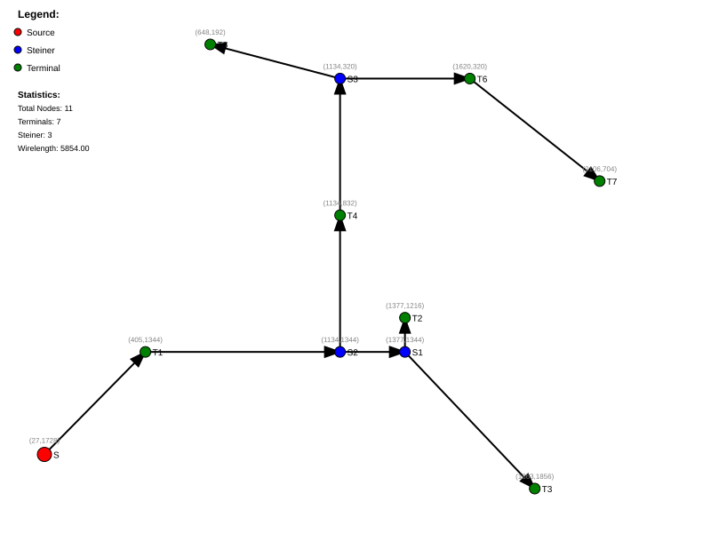
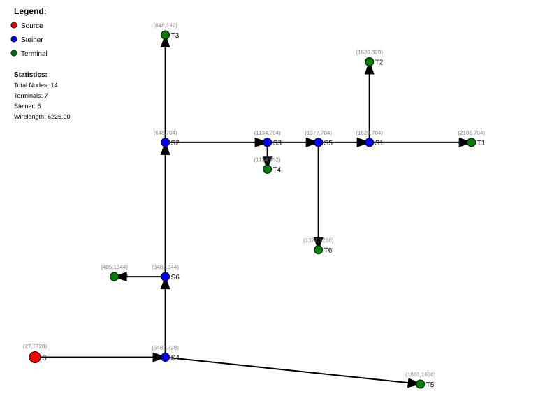
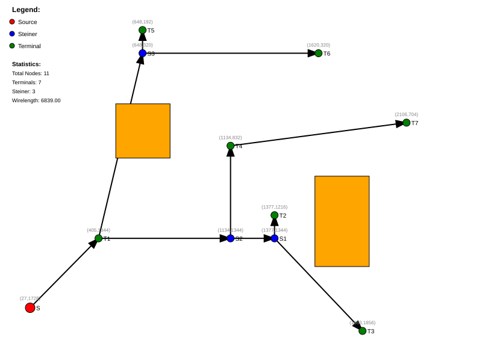
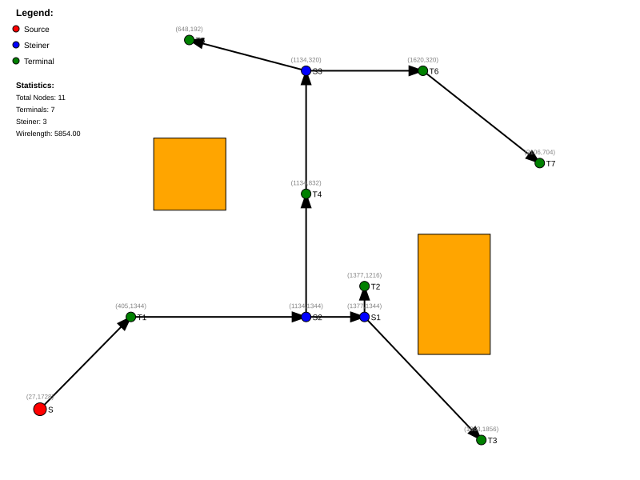
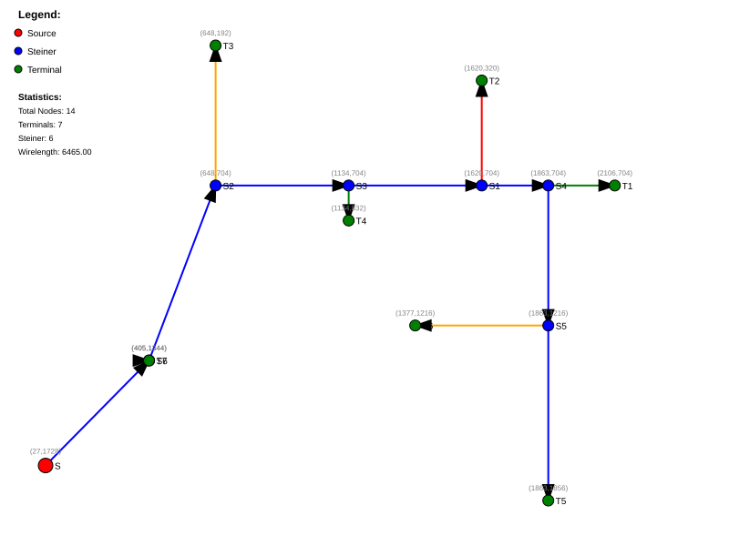
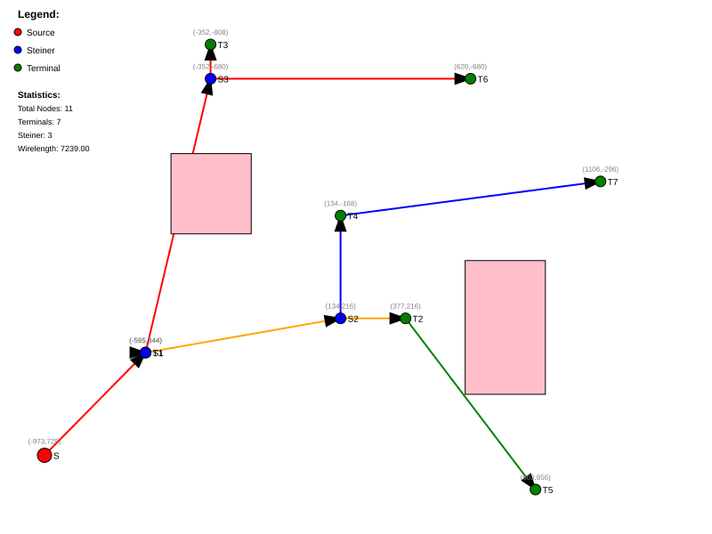

2026
Global routing determines the general path of each net through the chip, while detailed routing refines the exact wire positions.
graph TD
A[Net List] --> B[Global Routing]
B --> C[Routing Regions]
C --> D[Detailed Routing]
D --> E[Final Layout]
style A fill:#e1f5fe
style B fill:#b3e5fc
style C fill:#81d4fa
style D fill:#4fc3f7
style E fill:#29b6f6┌─────────────────────────────────────────────┐
│ GlobalRouter │
├─────────────────────────────────────────────┤
│ - source_position: Point (start) │
│ - terminal_positions: List[Point] (sinks) │
│ - keepouts: List[Point] (obstacles) │
│ - tree: GlobalRoutingTree (result) │
│ - worst_wirelength: int (constraint) │
└─────────────────────────────────────────────┘| Method | Purpose |
|---|---|
route_simple() |
Direct connection |
route_with_steiners() |
Optimal wirelength |
route_with_constraints() |
Performance-driven |
class GlobalRoutingTree:
"""
Global routing tree that supports
Steiner node and terminal node insertion.
"""
# Node Types:
# - SOURCE: Starting point
# - STEINER: Intermediate optimization points
# - TERMINAL: End points (sinks) +--.----------o (terminal)
| `.
| `. (steiner)
| `.
o---------`---+ (source)
+--<---o
|
*-------->---o
|
o--->--+route_simple() -
Direct ConnectionConnects each terminal directly to the nearest node in the existing tree.
def route_simple(self) -> None:
for t in self.terminal_positions:
self.tree.insert_terminal_node(t)graph LR
S[Source<br/>📍] --> T1[Terminal 1]
S --> T2[Terminal 2]
S --> T3[Terminal 3]
style S fill:#ff9800
style T1 fill:#4caf50
style T2 fill:#4caf50
style T3 fill:#4caf50route_with_steiners()
- Wirelength OptimizationInserts Steiner points to reduce total wirelength by creating shared paths.
def route_with_steiners(self) -> None:
for t in self.terminal_positions:
self.tree.insert_terminal_with_steiner(t, self.keepouts)Given n terminals, find minimum spanning tree.
Minimize: ∑i, jwij ⋅ xij
Where xij = 1 if edge (i, j) is in the tree.
graph TD
S[Source] --> SP[Steiner Point]
SP --> T1[Terminal 1]
SP --> T2[Terminal 2]
style S fill:#ff9800
style SP fill:#9c27b0
style T1 fill:#4caf50
style T2 fill:#4caf50route_with_constraints()
- Performance-DrivenBalances wirelength with timing constraints using α parameter.
def route_with_constraints(self, alpha: float = 1.0) -> None:
allowed_wirelength = round(self.worst_wirelength * alpha)
for t in self.terminal_positions:
self.tree.insert_terminal_with_constraints(
t, allowed_wirelength, self.keepouts
)allowed_length = α × worst_wirelength
Where α ∈ [0.5, 2.0] typically.
| Scenario | α Value |
|---|---|
| High-performance | 0.5 - 0.8 |
| Balanced | 1.0 |
| Relaxed timing | 1.2 - 2.0 |
Keepouts are rectangular regions that the router must avoid - like pre-routed wires, macros, or IP blocks.
# Define keepouts as intervals
keepouts = [
Point(Interval(1600, 1900), Interval(1000, 1500)),
Point(Interval(500, 800), Interval(600, 900)),
]rectangle
title Keepout Regions
direction LR
A[Routing Area]
B{Keepout 1}
C{Keepout 2}
D[Free to Route]
A --> B
A --> C
A --> D# From routing_tree.py
for keepout in keepouts:
if (keepout.contains(nearest_pt) or
keepout.blocks(path1) or
keepout.blocks(path2) or
keepout.blocks(path3)):
block = True_find_insertion_point()
Methoddef _find_insertion_point(
point: Point,
keepouts: Optional[List[Point]] = None,
allowed_wirelength: Optional[int] = None,
) -> Tuple[Optional[RoutingNode], RoutingNode]:flowchart TD
A[Start] --> B{Traverse Tree}
B --> C[Calculate Path to Point]
C --> D{Keepouts Block?}
D -->|Yes| E[Skip This Branch]
D -->|No| F{Distance < Min?}
F -->|Yes| G[Update Nearest]
F -->|No| H[Continue]
G --> I{Allowed Wirelength?}
I -->|Yes| J[Check Constraint]
J -->|Pass| K[Select as Candidate]
I -->|No| K
H --> B
K --> L[Return Parent & Nearest]
style A fill:#ff9800
style K fill:#4caf50The router supports 3D coordinates - useful for multi-layer chips (e.g., 2D + metal layers).
# 2D Point
p2d = Point(100, 200)
# 3D Point (x, y, z) where z = layer
p3d = Point(Point(100, 200), 3) # Layer 3graph LR
subgraph "2D View"
A[x, y]
end
subgraph "3D View"
B[x, y, z]
end
A -->|"extend"| B
style A fill:#e3f2fd
style B fill:#bbdefb| Scenario | 2D Wirelength | 3D Wirelength | Savings |
|---|---|---|---|
| Same layer | L2 | L2 + 2z | - |
| Multi-layer | L | L/2 + z | ✅ ~50% |
>>> tree2d = GlobalRoutingTree(Point(0, 0))
>>> tree2d.insert_steiner_node(Point(2, 2))
>>> tree2d.calculate_wirelength()
4
>>> tree3d = GlobalRoutingTree(Point(Point(0, 0), 0))
>>> tree3d.insert_steiner_node(Point(Point(2, 2), 2))
>>> tree3d.calculate_wirelength()
6 # 2 + 2 + 2 (includes z-layer cost)
Optimal wirelength using Steiner points

Performance-driven routing with timing budget

Routes detour around gray keepout regions

Combines Steiner optimization with keepout avoidance


from physdes.point import Point
from physdes.router.global_router import GlobalRouter
# Define source and terminals
source = Point(0, 0)
terminals = [Point(10, 0), Point(5, 5), Point(8, 3)]
# Create router
router = GlobalRouter(source, terminals)
# Choose strategy
router.route_simple() # Fast, direct
# or
router.route_with_steiners() # Optimal wirelength
# or
router.route_with_constraints(1.0) # With timing budgetfrom physdes.interval import Interval
# Define keepout regions
keepouts = [
Point(Interval(4, 6), Interval(-1, 1)), # Block in middle
]
router = GlobalRouter(source, terminals, keepouts)
router.route_with_steiners()
# Calculate total wirelength
total_wl = router.tree.calculate_wirelength()
print(f"Total wirelength: {total_wl}")# 3D routing (e.g., 2-metal layer design)
source_3d = Point(Point(0, 0), 0) # Layer 0
terminals_3d = [
Point(Point(10, 1), 1), # Layer 1
Point(Point(5, 2), 2), # Layer 2
]
router_3d = GlobalRouter(source_3d, terminals_3d)
router_3d.route_with_steiners()from physdes.router.routing_visualizer import (
save_routing_tree_svg,
visualize_routing_tree_svg
)
# Generate SVG string
svg = visualize_routing_tree_svg(
router.tree,
keepouts,
width=1000,
height=1000
)
print(svg)
# Save to file
save_routing_tree_svg(
router.tree,
keepouts,
filename="my_route.svg"
)| Operation | Time Complexity |
|---|---|
route_simple() |
O(n ⋅ m) |
route_with_steiners() |
O(n ⋅ m ⋅ k) |
_find_insertion_point() |
O(m) per call |
Where: - n = number of terminals - m = nodes in tree - k = number of keepouts
class Point(T1, T2):
"""Supports both 2D and 3D coordinates"""
xcoord: T1 # int or Interval
ycoord: T2 # int or Intervalclass RoutingNode:
id: str
type: NodeType # SOURCE, STEINER, TERMINAL
pt: Point
children: List[RoutingNode]
parent: Optional[RoutingNode]
path_length: int # for constraint checkingdef _find_nearest_node(self, point: Point) -> RoutingNode:
"""Find node with minimum Manhattan distance"""
nearest = self.source
min_distance = self.source.manhattan_distance(target)
for node in self.nodes.values():
dist = node.manhattan_distance(target)
if dist < min_distance:
nearest = node
return nearestdef insert_terminal_with_steiner(self, point, keepouts=None):
parent, nearest = self._find_insertion_point(point, keepouts)
if parent is None:
nearest.add_child(terminal)
else:
# Insert Steiner point on the branch
nearest_pt = possible_path.nearest_to(point)
steiner = RoutingNode(..., nearest_pt)
# Reconnect: parent -> steiner -> nearest + terminal# All tests
pytest
# Specific test
pytest tests/test_global_router_with_keepouts.py -v
# With coverage
pytest --cov physdes --cov-report term-missing| Module | Tests |
|---|---|
global_router.py |
✅ test_route_* |
routing_tree.py |
✅ Tree operations |
keepouts |
✅ test_global_router_with_keepouts.py |
3D |
✅ test_global_router3d*.py |
| Image | Description |
|---|---|
| Routing with Steiner points | |
| Routing with timing constraints | |
| Routing with keepout obstacles | |
| Steiner points + keepouts |
| Image | Description |
|---|---|
| 3D routing with Steiner points | |
| 3D with constraints & keepouts |
flowchart TB
subgraph Input
A[Source Point] --> R[GlobalRouter]
B[Terminals] --> R
C[Keepouts] --> R
end
R --> D{route_simple}
R --> E{route_with_steiners}
R --> F{route_with_constraints}
D --> G[Direct Connection]
E --> H[Find Optimal Branch]
F --> I[Check Wirelength Budget]
G --> J[GlobalRoutingTree]
H --> J
I --> J
J --> K[Calculate Wirelength]
K --> L[Visualize SVG]
style R fill:#ff9800
style J fill:#4caf50
style L fill:#2196f3Different routing algorithms as interchangeable strategies.
# GlobalRouter supports multiple strategies
router.route_simple() # Strategy A
router.route_with_steiners() # Strategy B
router.route_with_constraints() # Strategy CRouting tree as hierarchical structure.
graph TD
Source --> Steiner1
Source --> Steiner2
Steiner1 --> Terminal1
Steiner1 --> Terminal2
Steiner2 --> Terminal3
style Source fill:#ff9800
style Steiner1 fill:#9c27b0
style Steiner2 fill:#9c27b0
style Terminal1 fill:#4caf50
style Terminal2 fill:#4caf50
style Terminal3 fill:#4caf50| Feature | Description | Difficulty |
|---|---|---|
| Congestion-aware | Consider track usage | ⭐⭐⭐ |
| Timing-driven | Use slack-based costs | ⭐⭐⭐ |
| Power routing | Optimize for IR drop | ⭐⭐⭐ |
| Net ordering | Priority-based routing | ⭐⭐ |
| Layer assignment | Auto metal layer select | ⭐⭐ |
src/physdes/router/global_router.py - Main routersrc/physdes/router/routing_tree.py - Tree data
structuresrc/physdes/router/routing_visualizer.py - SVG
generation# Generate docs
sphinx-build -b html docs/ docs/_build/html
# View at http://localhost:8000d2((x1, y1), (x2, y2)) = |x1 − x2|+|y1 − y2|
d3((x1, y1, z1), (x2, y2, z2)) = |x1 − x2|+|y1 − y2|+|z1 − z2|
budget = α × maxi(dist(source, terminali))
# 2D
p = Point(100, 200)
# 2D with intervals (for keepouts)
p = Point(Interval(10, 20), Interval(30, 40))
# 3D
p3d = Point(Point(100, 200), 3) # (x,y), layer| Method | Description |
|---|---|
min_dist_with(other) |
Manhattan distance |
hull_with(other) |
Bounding box (Interval) |
contains(point) |
Point in rect? |
blocks(path) |
Path intersects rect? |
nearest_to(point) |
Closest point on rect edge |
physdes-py/
├── src/physdes/
│ ├── router/
│ │ ├── global_router.py # Main router ⭐
│ │ ├── routing_tree.py # Tree structure ⭐
│ │ └── routing_visualizer.py # SVG output
│ ├── point.py # Point/Interval classes
│ ├── interval.py # Interval arithmetic
│ └── cts/
│ └── dme_algorithm.py # Clock tree synthesis
├── tests/
│ ├── test_global_router*.py # Router tests
│ └── test_routing_tree*.py # Tree tests
├── outputs/ # Generated SVGs
│ ├── example_route*.svg
│ └── *clock_tree*.svg
└── README.mdgraph TD
A[Source/Start] --> B[Process]
B --> C[Output]
B --> D[Alternative]
style A fill:#ff9800,color:#000
style B fill:#2196f3,color:#fff
style C fill:#4caf50,color:#000
style D fill:#f44336,color:#fff| Color | Meaning |
|---|---|
| 🟠 Orange | Start/Source |
| 🔵 Blue | Process/Action |
| 🟢 Green | Success/Output |
| 🔴 Red | Error/Alternative |
physdes-py - VLSI Physical Design Python Library